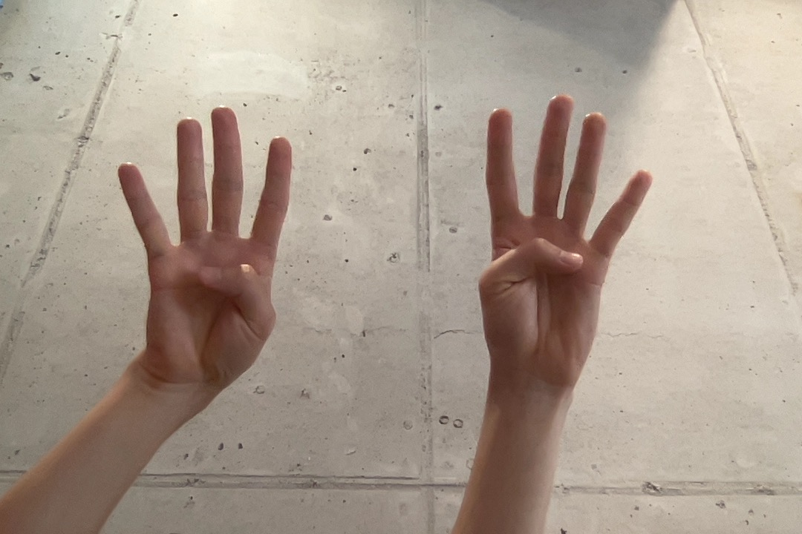
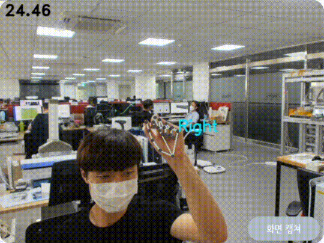
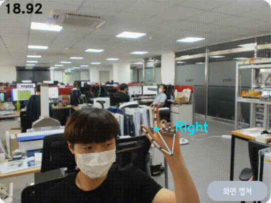

자유 모드는 웹서핑을 위해 추가적으로 제공되는 모드로 일반적인 마우스 움직임 / 클릭 / 드래그 / 휠 기능을 포함합니다. 터치패널의 자유 모드 버튼을 누르거나 자유 모드 글자 밑의 제스쳐를 양손으로 취해 자유 모드로 전환할 수 있습니다.

자유 모드로 전환하기 위한 제스쳐
자유 모드 기능 ✅
자유 모드에서는 마우스 움직임 / 클릭 / 드래그 / 휠 기능을 사용할 수 있습니다.
자유 모드에서는 마우스 제어가 활성화 됩니다. 엄지와 검지만 편 손 모양으로 마우스를 이동시키고 엄지를 중지에 살짝 부딪혀 클릭을 할 수 있습니다.

마우스 움직임과 클릭
필기 모드에서는 드래그 기능이 제공됩니다. 엄지 끝과 검지 끝을 붙혀 드래그를 활성화 해보세요. 화면에 글씨를 쓰듯이 엄지와 검지를 포함하는 면이 화면과 평행하게 유지할수록 더 잘 작동합니다.

드래그 기능
마우스를 움직이다 휠을 이용하고 싶을 때 검지와 중지를 세워 화면을 쓸듯이 움직여 보세요. 휠 기능을 활성화해 웹 서핑을 돕습니다. 검지와 중지 사이의 거리가 멀어지면 휠을 사용하지 않는 점을 이용해 페이지의 위, 아래를 탐색할 수 있습니다. 아래 영상을 참조해 주세요.